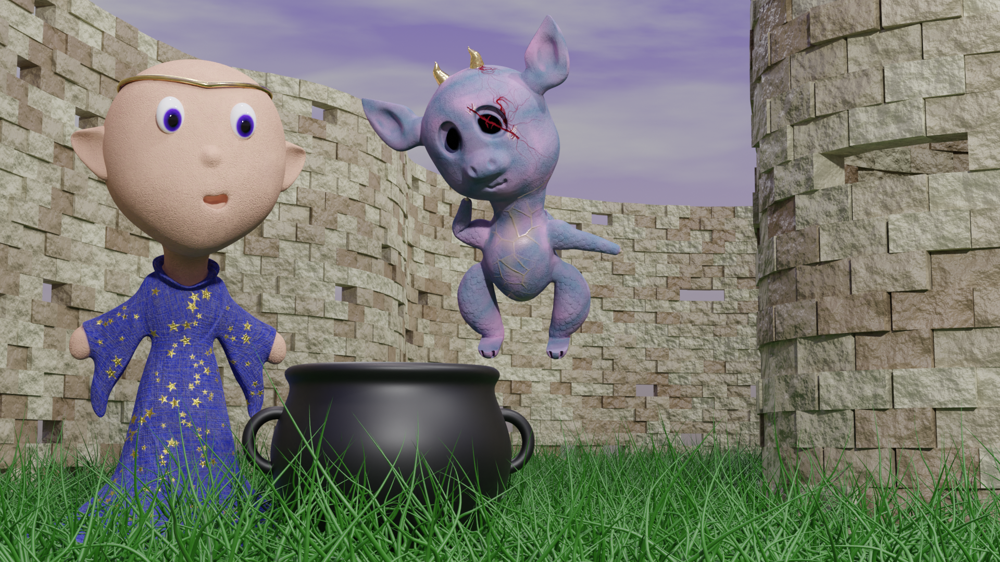
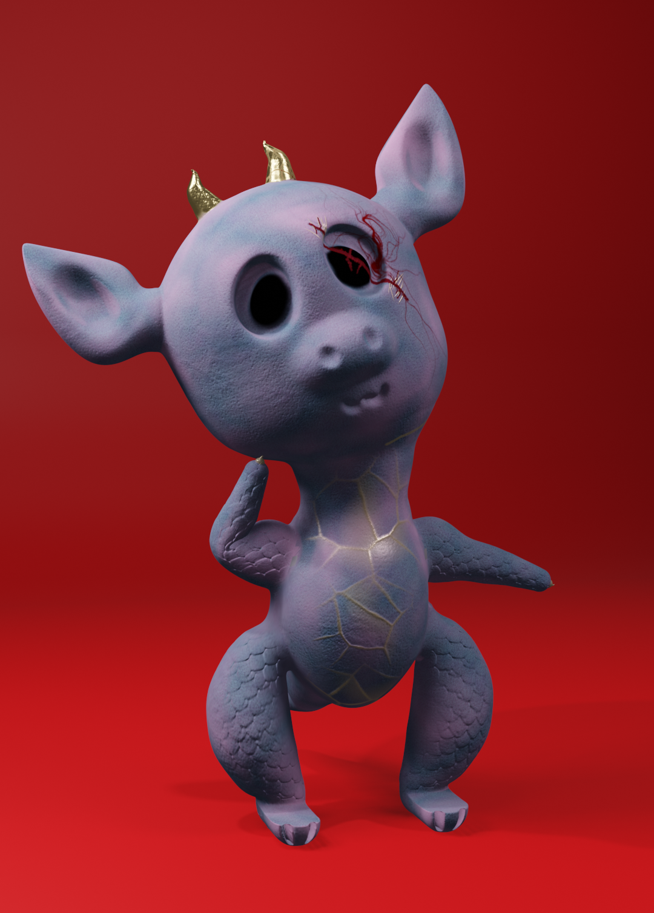

Download CV
A Touch of Mischief
Discover a scene in which a wizard and dragon craft potions atop a castle.
Made in Blender and Substance Painter.
Back to projects

Together, a wizard and a dragon concoct magical potions.

The original dragon model.